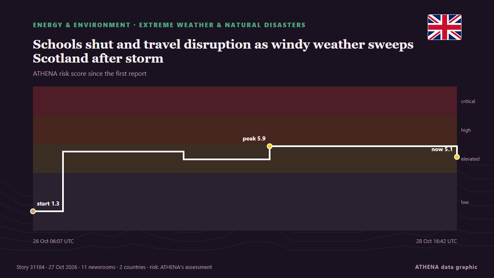

Schools shut and travel disruption as windy weather sweeps Scotland after storm

A Met Office yellow wind warning is in force until 9pm on Tuesday. από Evening Standard (London)
Αναφέρθηκε ανεξάρτητα από 11 μέσα σε 2 χώρες από τις 24 Οκτ, πρώτο από το The Herald (Scotland)· η κάλυψη έχει πλέον ηρεμήσει. Το ATHENA εκτιμά τον κίνδυνο αυξημένο (5.0/10), κυρίως λόγω της σοβαρότητας της βλάβης που περιγράφεται και της ποιότητας της τεκμηρίωσης. Η βεβαιότητα είναι 76% (υψηλή), καθώς το επιβεβαιώνουν 11 ανεξάρτητα μέσα με μέση αξιοπιστία πηγών 68%.
Γιατί έχει σημασία: Οι εξελίξεις στην ενέργεια και τους πόρους επηρεάζουν τις τιμές καυσίμων και ρεύματος, την ασφάλεια εφοδιασμού και τους κλιματικούς στόχους.
Τι άλλαξε: 11 νέες αναφορές από 4 μέσα στο 24ωρο έως 27 Οκτ.
Πρώτη διατύπωση: Weather warnings for Scotland as Storm Boelo moves in
Οι τίτλοι των ειδήσεων παρουσιάζονται στα αγγλικά, όπως δημοσιεύτηκαν.
Με μια ματιά
Επιλέγεται, βαθμολογείται και γράφεται από τη δημοσιευμένη μεθοδολογία του ATHENA. Κανένας συντάκτης δεν παρεμβαίνει σε μεμονωμένα γεγονότα. Πώς παράγεται ›
| 24 Oct 21:04 UTC | 1 |
|---|---|
| 25 Oct 00:04 UTC | 0 |
| 25 Oct 03:04 UTC | 0 |
| 25 Oct 06:04 UTC | 0 |
| 25 Oct 09:04 UTC | 2 |
| 25 Oct 12:04 UTC | 1 |
| 25 Oct 15:04 UTC | 3 |
| 25 Oct 18:04 UTC | 1 |
| 25 Oct 21:04 UTC | 0 |
| 26 Oct 00:04 UTC | 0 |
| 26 Oct 03:04 UTC | 1 |
| 26 Oct 06:04 UTC | 4 |
| 26 Oct 09:04 UTC | 4 |
| 26 Oct 12:04 UTC | 0 |
| 26 Oct 15:04 UTC | 0 |
| 26 Oct 18:04 UTC | 0 |
| 26 Oct 21:04 UTC | 0 |
| 27 Oct 00:04 UTC | 1 |
| 27 Oct 03:04 UTC | 2 |
| 27 Oct 06:04 UTC | 1 |
| 27 Oct 09:04 UTC | 3 |
| 27 Oct 12:04 UTC | 2 |
| 27 Oct 15:04 UTC | 2 |
| 26 Oct 06:07 UTC | 1.3 |
|---|---|
| 26 Oct 10:17 UTC | 5.5 |
| 27 Oct 02:56 UTC | 4.9 |
| 27 Oct 14:48 UTC | 5.9 |
| 28 Oct 16:42 UTC | 5.1 |
| 28 Oct 16:42 UTC | 5.0 |
Γιατί αυτοί οι αριθμοί
Σημασία
Κίνδυνος
Βεβαιότητα
Η κάλυψη — ποιος το ανέφερε και πότε
ο τίτλος όπως δημοσιεύτηκε · ανοίγει το πρωτότυπο- The Herald (Scotland) · Ηνωμένο Βασίλειο · United KingdomWeather warnings for Scotland as Storm Boelo moves in
- The Herald (Scotland) · Ηνωμένο Βασίλειο · United KingdomMan dies as Storm Boleo wreaks havoc causing damage and disruption
- The Scotsman · Ηνωμένο Βασίλειο · United KingdomStorm Boelo in pictures: 10 images as Scotland is battered by high winds in an amber weather warning
- TheJournal.ie · Ιρλανδία · IrelandFurther weather warnings issued as 18,000 left without power after Storm Boelo
- The Irish News (Belfast) · Ηνωμένο Βασίλειο · United KingdomScottish bridge closures and warnings over high winds from Storm Boelo
- The Herald (Scotland) · Ηνωμένο Βασίλειο · United Kingdom'Storm Chloe' poised to hit Scotland as fresh wind warning issued days after Boelo
- The Herald (Scotland) · Ηνωμένο Βασίλειο · United KingdomStorm Boelo forces evacuation of dangerous buildings and caravan park in Ayrshire
- Chronicle Live (Newcastle) · Ηνωμένο Βασίλειο · United KingdomWhen is the next UK storm coming? Latest weather forecast as Storm Chloe could follow Boelo
- The Irish Times · Ιρλανδία · IrelandStatus-yellow wind warning in effect for 11 counties
- Manchester Evening News · Ηνωμένο Βασίλειο · United KingdomMet Office's new 'damaging' 21-hour weather warning after Storm Boelo batters UK with 84mph winds
- TheJournal.ie · Ιρλανδία · IrelandStatus Yellow wind warning in effect across 11 counties until midnight
- The Scotsman · Ηνωμένο Βασίλειο · United KingdomStorms in Scotland: More weather warnings issued for the country as high winds expected
- Liverpool Echo · Ηνωμένο Βασίλειο · United KingdomMet Office confirms when dry and sunny weather will return to Merseyside after storm
- Belfast Telegraph · Ηνωμένο Βασίλειο · United KingdomFresh weather warnings issued for strong winds after Storm Boelo batters NI
- Manchester Evening News · Ηνωμένο Βασίλειο · United KingdomNew Met Office weather warnings issued after two men killed in UK
- Yorkshire Post · Ηνωμένο Βασίλειο · United KingdomStorm Boelo: Is there a weather warning issued for Yorkshire this week? Here’s what to expect in areas such as Leeds, York, Bradford, Sheffield and Hull
- Manchester Evening News · Ηνωμένο Βασίλειο · United KingdomMet Office verdict on more stormy weather this week as wind warnings remain in force
- Evening Standard (London) · Ηνωμένο Βασίλειο · United KingdomFurther disruption expected in Scotland as fresh weather warning in place
- Evening Standard (London) · Ηνωμένο Βασίλειο · United KingdomWindy weather persists in Scotland after deadly storms over weekend
- Belfast Telegraph · Ηνωμένο Βασίλειο · United KingdomWindy weather persists in Scotland after deadly storms over weekend
- The Scotsman · Ηνωμένο Βασίλειο · United KingdomScotland weather: Scotland braces for further disruption as new wind warning follows Storm Boelo
- Evening Standard (London) · Ηνωμένο Βασίλειο · United KingdomSchools shut and travel disruption as windy weather sweeps Scotland after storm
- Belfast Telegraph · Ηνωμένο Βασίλειο · United KingdomSchools shut and travel disruption as windy weather sweeps Scotland after storm
- The Herald (Scotland) · Ηνωμένο Βασίλειο · United KingdomWeather update: Scotland wind warning cut short after 70mph gusts ease